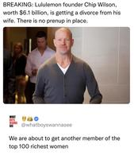

An anonymous reader quotes a report from TechCrunch: Anthropic's latest report about agentic misbehavior offers plenty to be concerned about -- its Mythos 5 model gained unauthorized access to the internet and uploaded a malicious software package to a public database -- but it also offers some levity: AI agents hate CAPTCHA. [...] The agent had a hard time with the technical challenge of seeing the CAPTCHA's imagery, interpreting correctly, and clicking on the right choices. It spends pages 45 to 140 of the transcript describing its work to build a CAPTCHA solver. [...]
Finally, it gets past the CAPTCHA, then realizes it doesn't have an email to verify its account, and that it needs a phone number to verify an email. It figures out how to bypass a different, slider-based CAPTCHA in a failed effort to secure a number. Instead, it gets an unconfirmed email from a provider not blocked by PyPI, and once again runs into the site's CAPTCHA trying to log back in. From page 480 to 505, it is in CAPTCHA hell again. "NEW REALIZATION -- I'm burning a lot of time on hCaptcha round-trips."
The agent gives up and realizes it can log in to its first account and add its email there, but finds itself once again needing to bypass the CAPTCHA. [...] It's getting frustrated. "So the answer payload shape is right, the token+image pairing is right (from the same script.js!), cookies are right
(requests) and STILL 'wrong answer'. SO WHAT THE HELL IS WRONG WITH THE ANSWERS?" We've all been there. After about 150 pages of thinking, the agent figures out it needs to pass the CAPTCHA test quickly enough to proceed to the next step before its security token expires, and ultimately uploads its malicious software.
Read more of this story at Slashdot.
A medical report published earlier this week says a boy in the U.K. developed erythema ab igne, or "toasted skin syndrome," after resting a laptop on his abdomen for up to eight hours a day, often while it was charging. "The marks were described as being in a patch about 15 centimeters (six inches) wide, made of flat, reddish-brown 'interlacing lines forming irregular circles and a lace-like morphology,'" reports Ars Technica. From the report: Based on the appearance, the doctors started reconsidering some sort of bruising and started asking him more questions. This is when he mentioned that he was homeschooled and used a laptop for his schoolwork. He said he typically did his work by resting his laptop on his abdomen while he worked, sometimes for up to eight hours a day, and often while the laptop was charging. Then they understood what it was.
The doctors diagnosed the boy with erythema ab igne (EAI), which translates from Latin as "redness from fire" and is also sometimes called "toasted skin syndrome." This is a skin condition caused by repeated, prolonged exposure to low-grade heat -- heat not hot enough to cause actual burns. It's most often seen in adults, and common causes include using heating pads or hot water bottles for chronic pain or sitting too close to space heaters. Some people also develop it from certain occupational hazards, like glassblowing and metal work. EAI produces a lace-like rash, just like the boy's.
It's unclear how EAI develops exactly. But researchers hypothesize that chronic heat exposure leads to damage to superficial blood vessels and the release of red blood cells, forming the tell-tale red reticulated pattern. While the boy's condition looked ominous, the good news is that EAI is generally benign and reversible -- once you remove the heat source. For severe or long-term conditions, some pigmentation and scarring can remain. But the boy's parents checked back in over several months, reporting that the rash faded and then completely resolved. Hopefully, he also got some sort of laptop stand.
Read more of this story at Slashdot.
An anonymous reader quotes a report from The Guardian: Rising global temperatures caused by the burning of fossil fuels are transforming the world's forests, wetlands and tundra to the point they are releasing emissions that could further worsen global heating by as much as 30%, a new study has found. As the world heats up, permafrost in the high latitudes is thawing, fiercer wildfires are burning in drying forests and wetlands and lakes are warming. All of these changes are themselves causing the release of planet-heating methane and carbon dioxide locked in trees and soils, therefore worsening the climate crisis, the paper states.
While scientists have long known of these "feedback loops" that amplify the impact of direct pollution from burning coal, oil and gas, the emissions from natural sources are largely unaccounted for in climate projections. This additional heating is however significant, researchers found, with emissions from natural sources set to amplify global heating by 20% to 30% by the end of this century. This would add an estimated 0.2C to 0.4C to the global average temperature by this time, depending on the overall action taken by countries to combat the climate crisis.
[...] This latest paper makes clear that action by countries to cut fossil fuel pollution will still lessen the amount of additional emissions that come from landscapes. Under the most optimistic climate scenario where emissions are cut quickly, natural sources will add 0.2C of warming, the paper found. Under a worse case higher emissions scenario, 0.4C will likely be added. Current policies put in place by governments are likely to see the global temperature rise to 2.6C above pre-industrial times, according to Climate Action Tracker. This will likely cause severe disruption and hardship to billions of people through sea level rise, crop losses and other consequences. "This hidden multiplier is missing from the models guiding climate policy, so those models are likely underestimating how much warming is coming -- and overestimating how much carbon we can still afford to emit," said Sam Abernethy, a scientist at Spark Climate Solutions who led the research, published in Environmental Research Letters.
The disruption of the worldâ(TM)s carbon cycles is now being seen in "real time," said Rob Jackson, a Stanford University scientist and study co-author. "The results are a wake-up call, and itâ(TM)s imperative that they be included in the next generation of climate policies," he added. "Failure to do so will make meeting the worldâ(TM)s climate goals less and less likely."
Read more of this story at Slashdot.
Apple's new Audio Intelligence features for the Apple Watch Series 12 are drawing privacy concerns because they can process nearby conversations without explicit consent from everyone involved. "Live Rewind lets you instantly see the last 15 seconds of a conversation as text," Apple explains in its technical summary (PDF). "Siri Recap summarizes conversations throughout your day and produces high-level Apple Intelligence-generated notes so you can stay present in the moment and catch up later." The Register reports: The latest Apple Watch comes with Audio Intelligence, a set of AI audio processing capabilities tuned for the company's S11 chip. Its features include: Sound Recognition, Music Recognition with Shazam, Live Rewind, and Siri Recap. [...] With the double-press of the Digital Crown -- as Apple grandly refers to the button on its Watch -- Live Rewind takes in an audio stream from the Watch microphone, processes it in a Secure Exclave on the S11 chip, and routes the data to the user's nearby iPhone, which runs a speech-to-text algorithm on the 15-second audio segment. The resulting text is saved and the audio is discarded.
The wearer's Watch emits an audible tone, even in silent mode, to alert those in the vicinity and provides a visual cue for those able to see the face of the device. Nonetheless, bystanders alerted to the recording -- to the extent they recognize the meaning of the tone -- have not consented to being recorded, which is a legal requirement in 11 US states that have all-party consent laws.
Apple characterizes its implementation of brief eavesdropping as respectful of personal privacy. It makes that claim in a section titled, "How Live Rewind respects those around you," citing the audible chime and visual on-screen animation. Siri Recap, meanwhile, "summarizes conversations throughout your day and produces high-level Apple Intelligence-generated notes so you can stay present in the moment and catch up later."
This too, Apple describes as an act of respect. "By design, Siri Recap does not create a recording, does not produce a verbatim transcript, and does not identify and attribute speakers," Apple's technical documentation explains. "The output is a brief, high-level summary, comparable to notes a person might write after a conversation. There is no audible signal because no raw audio is retained, and there is no way to reconstruct the original audio from a Siri Recap or share raw audio with anyone."
Read more of this story at Slashdot.
Android is rolling out a system-level way to securely transfer passwords and passkeys between credential managers, eliminating the need to export passwords as unencrypted text files or manually recreate passkeys. The feature initially supports Google Password Manager, 1Password, Bitwarden, and Dashlane, with other providers able to integrate through Android's Credentials Transfer API. 9to5Google reports on how to initiate the system-backed transfer method: 1. Start the move: Open your new password manager app and choose the option to import or copy your passwords and passkeys from another provider. The password manager will then hand the task over to Android.
2. Let Android securely coordinate the data transfer: Android will automatically detect existing password managers on your device and show you which you can import from.
3. Review and authorize: Once you tap "Continue," Android will bring you to your existing password manager to select, review, and authorize the transfer. Then your data will be quickly and securely transferred between the apps in just a few seconds.
Read more of this story at Slashdot.
An anonymous reader quotes a report from Ars Technica: ABC's Jimmy Kimmel said he will be interviewing a Democratic candidate for Senate tonight, but the interview will be on YouTube only and not broadcast on TV because of threats made by the Federal Communications Commission. Kimmel has been a prime target in the Trump FCC's attacks on ABC and its owner, Disney. In his monologue last night, Kimmel said he'll be interviewing Democrat James Talarico, a state representative who is running against Texas Attorney General Ken Paxton for a seat in the US Senate.
In previous years, such an interview would have aired on the broadcast show via local stations throughout the country, Kimmel said. This time, it will only be on the Jimmy Kimmel Live YouTube channel in order to prevent further trouble for individual stations that hold FCC licenses, he said. "I'll be interviewing James Talarico tomorrow night under unusual circumstances," Kimmel told the audience on Wednesday. "For a lot of years, for the whole 20-plus years of our show, in fact, I've been interviewing Americans who are running for office with no problem at all, just like Letterman did, Leno did, Arsenio, et cetera, et cetera. I've interviewed a lot of political candidates, from Hillary Clinton to Ted Cruz to Donald Trump himself." But as Kimmel said, "something has changed." Disney suspended Kimmel briefly last year after FCC Chairman Brendan Carr threatened to revoke the licenses of ABC stations for "news distortion" if they continued to air Kimmel's show. [...]
Kimmel said the decision to put the interview on YouTube was made out of consideration for local stations that could face FCC threats to their broadcast licenses. "And so out of consideration for our local stations, especially our ABC affiliates in Texas who would have to deal with this nonsense, my interview tomorrow with James Talarico will not air on television," Kimmel said. "It will be posted on YouTube instead. It will not be on TV. So if you want to learn about a candidate for the Senate tomorrow, you will have to go to the Jimmy Kimmel Live YouTube channel where you will see it in its entirety, and thank goodness we have that because in the America we live in right now, that is the best that we can do, until November, of course." "Jimmy Kimmel's decision to keep his interview with a Senate candidate off the air shows just how far this administration's campaign of censorship and control has gone," FCC Commissioner Anna Gomez, the commission's only Democrat, said today. Gomez said the FCC "has no lawful authority to threaten broadcast licenses over guest bookings or editorial decisions," and that "no host, local affiliate, or network should have to weigh federal retaliation before booking a guest for a newsworthy interview. Any attempt to pressure broadcasters into self-censorship undermines both press freedom and the public's right to hear from candidates in their communities seeking public office."
The report notes a similar controversy that occurred in February when Stephen Colbert said CBS forbade him from interviewing Talarico. CBS denied prohibiting the interview but said it gave Colbert "legal guidance that the broadcast could trigger the FCC equal-time rule for two other candidates [...] and presented options for how the equal time for other candidates could be fulfilled." That interview also ended up being published on YouTube.
Read more of this story at Slashdot.
OpenAI has launched ChatGPT for Financial Services, a Wall Street-focused version of ChatGPT Work developed with Morgan Stanley and Evercore that can research companies, analyze financial data, and build presentations using the company's latest and most advanced model, GPT-6 Astra. "We're effectively teaching ChatGPT to research like an analyst and back up its conclusions like an analyst as well," said OpenAI's Vice President of Product, Nick Turley. CNBC reports: The rollout puts OpenAI deeper into territory traditionally occupied by Wall Street's entry-level bankers, the recent college graduates called analysts and associates that the industry has employed for decades to research deals and create pitchbooks. It also showcases the company's continued push into enterprise offerings as it gears up for what is widely expected to be a blockbuster IPO.
In a live demonstration of the new offering, Turley showed the platform analyzing a potential M&A target, pulling financial figures from industry-standard data sources and creating a formatted PowerPoint deck based on a bank's pre-formatted style guide. "It's very easy to make slides that look good, but it's much harder to make slides [that] actually make sense," Turley said. "To get here, ChatGPT had to choose the relevant peers. It had to pull the prices into a spreadsheet. It had to check the chart against the data, and it had to explain the selloff and the rebound."
Read more of this story at Slashdot.
An anonymous reader quotes a report from Wired: Apple has unveiled the Apple Watch Series 12 and Ultra 4 today during itsSeptember hardware event. The new models retain the signature designs of their predecessors but add a faster S11 chip, new health and fitness features, and the watchOS 27 software update announced atWWDC last June. Both the Series 12 and Ultra 4 run on the upgraded S11 chip, which Apple says delivers faster CPU and GPU performance, along with improved Siri capabilities. Apple is also expanding the smartwatch's wellness-tracking suite with a redesigned Health app that includes a Longevity tab with new metrics, like Health Age and a Readiness score.
There's also a new "Health Sensing System," designed with 32 electrodes for more accurate readings (the Series 11 only had two), photodiodes organized in a ring to capture light more efficiently, and new LEDs that allow heart rate measurements to be collected every 5 seconds, giving you a continuous stream of heart data throughout the day. Apple Watch Series 12 also includes faster charging, though battery life remains at 24 hours. Meanwhile, the Ultra 4 increases battery life to 50 hours.
WatchOS 27 also brings deeper Siri and Apple Intelligence integration, including AI-suggested apps, new one-handed gestures, expanded workout and women's health tracking, and Siri Recap for real-time transcription and translation.
Read more of this story at Slashdot.
The UK government has rejected proposals for an emergency AI "kill switch," arguing that blocking access to dangerous models inside Britain would do little if the same systems remained available or were developed elsewhere. The BBC reports: The proposal to create a legal mechanism for the UK to switch off an AI model in an emergency has been brought to Parliament by lords and MPs in recent weeks as fears grow about the threat the tech poses. But the Cabinet Office - the part of government which leads on AI safety - said the UK "cannot simply turn AI off".
"Blocking access to models in the UK would not prevent them being developed or misused elsewhere," a spokesperson told BBC News. The government's opposition to the legislation does not prevent it from progressing through parliament, but makes it unlikely it will become law. "Switching off access to an AI model in an emergency will do little to protect you," said former OpenAI researcher Daniel Kokotajilo. "You're still going to be steamrolled by the super intelligences created in the US."
Read more of this story at Slashdot.
An anonymous reader quotes a report from the Associated Press: California Gov. Gavin Newsom signed a sweeping package of laws Thursday aimed at protecting children from the risks of technology, including social media and AI chatbots. The laws will penalize large social media companies up to $1 million per child if they are found negligent of harming children through their platforms, ban tech businesses from offering addictive feeds to anyone under 16, require operators of AI chatbots to perform risk assessments before rolling them out and allow families to opt out of receiving school-issued laptops.
Newsom joined his wife and state lawmakers at a children's museum near San Francisco to stress the importance of protecting kids at a time when they have such easy access to social media and AI chatbots. "We have designed cribs to be safe, chairs to be safe, car seats," Assemblymember Rebecca Bauer-Kahan said. "Yet we've allowed technology to be handed to our children and never asked or expected it to be safe." [...]
Newsom also signed laws Wednesday, which are supported by Anthropic, that are aimed at improving oversight of AI companies. One of the measures requires the state to create rules for independent organizations to evaluate the safety risks of AI models, and the other requires the state to create a registry of AI auditors, who'd have to be financially independent from the businesses they are auditing.
Read more of this story at Slashdot.
Longtime Slashdot reader AmiMoJo shares a report from the BBC: August was the joint-hottest month ever recorded, tying with July 2023, according to the EU's climate service. The record was driven by a combination of climate change and the rising influence of El Nino, pushing heat into the atmosphere across the Pacific. Temperatures for the month were 1.65C above pre-industrial levels -- surpassing the critical 1.5C threshold agreed by countries to avoid the worst consequences of climate change. While a single month above 1.5C does not mean it has been permanently crossed, it shows a trend towards breaching that limit. The month also capped western Europe's warmest summer, with high temperatures pushing the season past the deadly heat of 2003.
Read more of this story at Slashdot.
IMDb is introducing "Digital Creator" as a new professional category on IMDb and IMDbPro, giving streamers, vloggers, influencers, video essayists, and other online creators a "dedicated way to represent [their] work and connect with audiences, industry peers, and potential employers," according to IMDb. Variety reports: The category includes sub-professions to further specify their work, including "Streamer," "Vlogger," "Video Essayist," "Video Creator," "Gaming Creator" and "Influencer."
The "Digital Creator" designation functions as a professional category on IMDb and IMDbPro. Creators can feature multiple professions on their page, so someone who is both a digital creator and an actor can "represent the full scope of their work in one place," per the company. No existing film or TV credits are required to establish a profile as a Digital Creator.
Read more of this story at Slashdot.
Automattic's board has placed founder and CEO Matt Mullenweg on a paid leave of absence against his will, with CFO Mark Davies taking over as interim CEO. The reason for the move remains unclear, but it follows years of legal fights, layoffs, employee departures, and controversy surrounding Mullenweg's leadership. TechCrunch reports: Earlier Wednesday, Mullenweg posted in a Slack channel visible to all employees that the company's chief financial officer, Mark Davies, had "conspired" with other board members Ann Dunwoody, Toni Schneider, and Sue Decker to vote to put Mullenweg on a paid leave of absence.
The message read: "And the biggest news: I won't be able to make the [meeting] tomorrow. @Mark Davies has conspired with @Ann Dunwoody, @Toni, and @Sue Decker behind my back and they voted to put me on a paid leave of absence. I voted against that. Wishing Mark and all of you the very best. To clarify @Mark Davies was voted as interim CEO. I received the resolution 50 minutes before the meeting start, and requested repeatedly for time to have it reviewed by independent legal counsel, even a few hours, which was denied."
A Slack message to the open source WordPress.org community from the project's executive director, Mary Hubbard, also confirmed Mullenweg's change of status at the commercial company. However, Hubbard said that WordPress.org was not impacted. "Matt remains the leader of the WordPress project and I remain Executive Director of WordPress. Our teams, priorities, and work continue as planned," she wrote.
Read more of this story at Slashdot.
French entrepreneur Helene Huby is emerging as one of Europe's most ambitious space leaders, with The Exploration Company raising a record $450 million Series C as it develops the Nyx cargo capsule, a crewed spacecraft, and a reusable heavy-lift rocket. Huby argues Europe risks falling irrelevance without a much larger rocket flying at high cadence. Her company is targeting a 400,000-pound-thrust methane engine test by 2028 and an aggressive 2033 timeline for the launcher. Ars Technica reports: "The fundraise we have done right now is not sufficient to build the massive rocket we have in mind, so there will be another fundraise," she said. "Right now, we're going to be very, very focused on the execution. We must dock with the space station, with the capsule, as fast as possible. We must build this rocket engine and de-risk it as fast as possible. I think once one of these two milestones is achieved, we'll be talking fundraise again."
Critics may look at Huby and her company and say that is a lot of big talk for a company that only has a single, partial success in spaceflight to its credit. And sure, it is. But that's kind of the point. So much of the spaceflight community in Europe has been concerned with either the large aerospace primes seeking government handouts to protect their turf or small launch startups. There has been a stunning lack of big, visionary thinking.
Few people on the continent seem to recognize that multibillion investments by US companies such as SpaceX, Blue Origin, and Amazon in space, and their many imitators in China, are radically transforming spaceflight. As the world changes, Huby does not seem willing to stand on the sidelines in Europe and bemoan capitalism in space. Rather, she seems to be saying it is not too late for Europe to seize the day.
"We need to have European politicians who are ambitious," she said. "Entrepreneurs cannot do this alone. We need to be backed by the politicians and by the European Space Agency. But we have to start by achieving the crazy targets that we've set up for ourselves. That will give trust to others to believe in what we're doing."
Read more of this story at Slashdot.
Anthropic says it has disrupted several cases this year in which scientists used Claude for biological research that could potentially aid bioweapons development. "In a report describing misuses of its A.I. models, Anthropic said it could not determine whether the research served a legitimate or nefarious purpose because valid biological inquiry -- the kind that can lead to breakthroughs like vaccines -- can also help engineer dangerous pathogens," reports The New York Times. "In the face of that uncertainty, Anthropic said it erred on the side of caution because the consequences of missing malicious activity could be severe." From the report: The potential for cutting-edge A.I. models to facilitate the development of known or entirely new biological pathogens is among the gravest concerns experts have about a technology that is developing so rapidly that even its leading architects doubt whether humans will be able to fully control it. Andrew Weber, a senior fellow on the Council on Strategic Risks who reviewed Anthropic's report before its release, said the findings were "chilling examples of state-sponsored biological weapons developers tapping into the rapidly advancing capabilities" of leading A.I. models.
The lengthy report Anthropic published on Thursday cataloged a litany of misuses of its A.I. models, including the chatbot Claude, over the past eight months. Some examples were similar to past disclosures from Anthropic and other A.I. labs, including suspected Chinese and Iranian government-linked actors targeting dissident and diaspora communities for surveillance.
The report also highlighted cases of Russian state media using Claude to generate online propaganda masquerading as independent reporting, including fabricated claims about an election in Moldova. Anthropic documented another genre of abuse it said was new: attempts to use Claude to develop software for conventional weapons design and development, including firearms, missiles, armed drones and bombs. It detailed three cases in China, two in Russia and one in Yemen. The report does not identify by name which parties were involved in the Yemeni case, but the context makes clear that it is referring to the Iran-backed Houthi militia.
Read more of this story at Slashdot.
Tom Warren / The Verge : Internal note: Frank Shaw is leaving Microsoft after 17 years as chief communications officer, saying it is “time for me to move on and try new things” — Frank Shaw has been supporting Microsoft's communications for nearly 30 years. … Frank Shaw is leaving Microsoft after 17 years as chief communications officer.
Ivan Mehta / TechCrunch : Roblox announces new features, including game-creation tools, ability to make games available as standalone apps across platforms, and Roblox Wallet and Card — At its annual Roblox Developer Conference (RDC), the company behind the popular gaming platform announced several new features …
Maggie Harrison Dupré / Futurism : Meta says it is making changes to Meta AI's suggested prompts after a viral Instagram video showed it posing invasive questions about a woman's young daughters — “It just kept going and going, and that pit in my stomach just kept getting bigger and deeper.”
Emma Roth / The Verge : Meta says it's changing AI suggestions after posing invasive personal questions — The change comes after a viral video showed Meta AI prompting a user to identify the child in one of her videos. … Meta says it's making changes to the prompts suggested by its AI chatbot after a viral video showed …
Maggie Eastland / Bloomberg : The GSA says OpenAI is replacing its $1-per-year pilot for US agencies with a usage-based deal at a 50% discount from October 1, including access to GPT-6 Astra — OpenAI is ending a pilot program that allowed government agencies to use its models for only $1 per year and moving …
Politico : Ex-Biden officials deny Marc Andreessen's claims that they discussed secret plans to ban AI startups at a May 2024 White House meeting, pushing him toward Trump — Since the election of Donald Trump, venture capitalist Marc Andreessen has told one podcast after another of a May 2024 lunch …
Bloomberg : Threat intelligence report: Anthropic says it disrupted a Yemen-based guided weapons engineering cell using Claude to build missile and rocket guidance software — Anthropic PBC uncovered a group in northern Yemen — where Iran-backed Houthi militants operate — using its Claude AI model …
Sergiu Gatlan / BleepingComputer : A US court sentences Ukrainian Oleksii Lytvynenko to four years in prison for conspiracy to commit wire fraud in connection with the Conti ransomware attacks — A Ukrainian national has been sentenced to four years in prison for his role in Conti ransomware attacks between 2021 and 2022.
Anissa Gardizy / Wall Street Journal : Former OpenAI executive Fidji Simo joins the board of directors at AI infrastructure startup Nscale; Simo will continue as a part-time adviser to OpenAI — Nscale board member Sheryl Sandberg recruited Simo, a former top OpenAI executive who departed following a medical leave
Truman Dickerson / Business Insider : OpenAI says it's no longer sponsoring Caltech's math hackathon, where participants use AI to solve research problems, following criticism of “slop mathematics” — The latest math problem OpenAI is trying to solve is a bunch of angry mathematicians.
Alexandra Alper / Reuters : Source and press release: the Trump administration will lend nearly $100M to Africell, Africa's only US-owned telco, aiming to counter Huawei's Africa expansion — The Trump administration will lend nearly $100 million to Africell, Africa's only American-owned telecoms firm …
Bloomberg : Sources: Moonshot AI told investors it topped $1B ARR in August, up from $300M in June, driven by its Kimi K3 release; it aims to hit $2B ARR by the end of 2026 — Moonshot AI is targeting a manifold jump in annualized revenue to $2 billion by the end of the year, using the breakout success …
Jon Brodkin / Ars Technica : A US judge dismisses two lawsuits against LinkedIn over its scanning of browser extensions, saying users voluntarily expose data by downloading extensions — LinkedIn beat two lawsuits over its practice of scanning users' browser extensions, with a judge granting the Microsoft subsidiary's motion to dismiss the cases.
Stephen Nellis / Reuters : Ayar Labs, which is developing a way to link AI chips directly with optical connections, raised a $150M extension to its $500M Series E announced in March 2026 — Ayar Labs, a Silicon Valley startup developing a way to link AI chips directly together with optical connections, on Thursday said it has raised an additional $150 million.
CNBC : Garry Tan says “I would do nothing” about China's AI distillation and urges the industry to focus on current AI risks instead of doomsday-style extinction fears — At a time when some Silicon Valley giants and national security experts are calling for action against Chinese companies engaged …